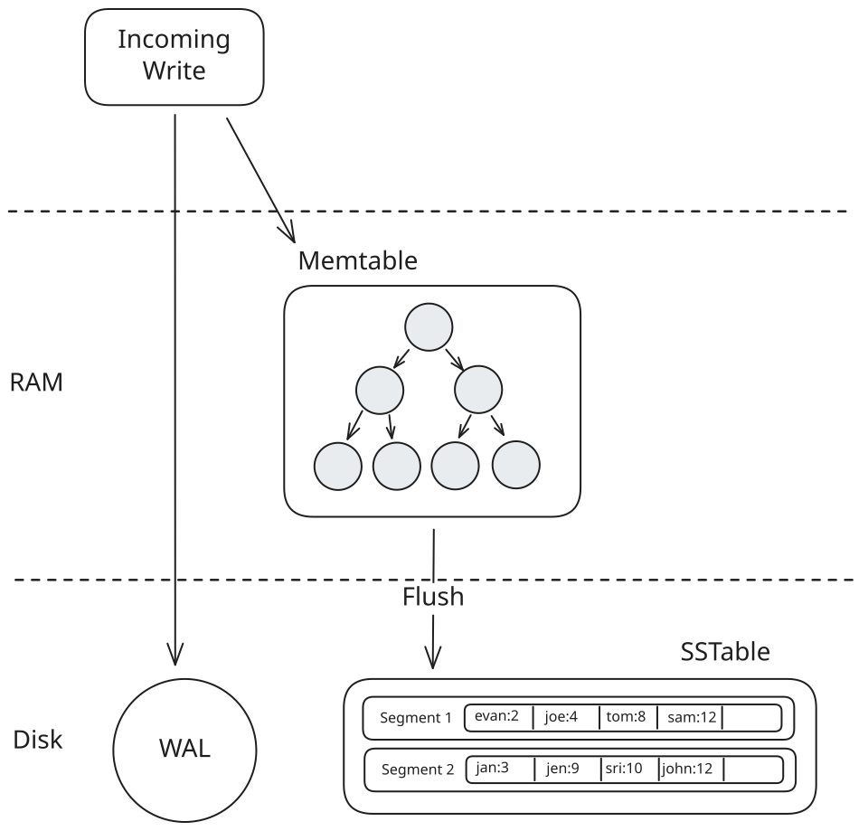
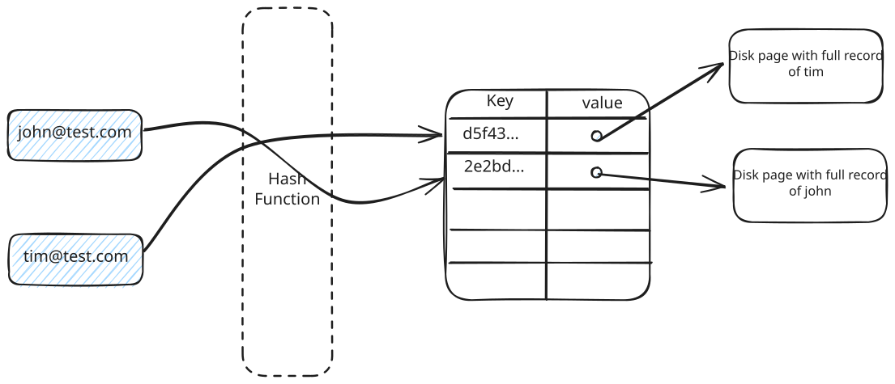
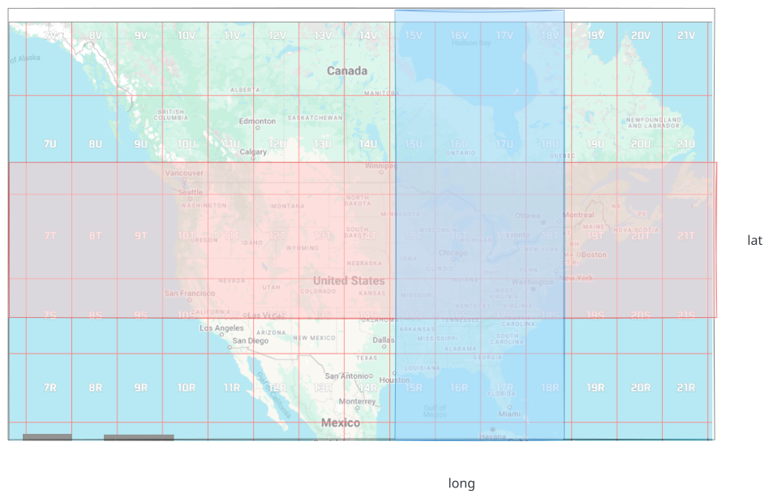
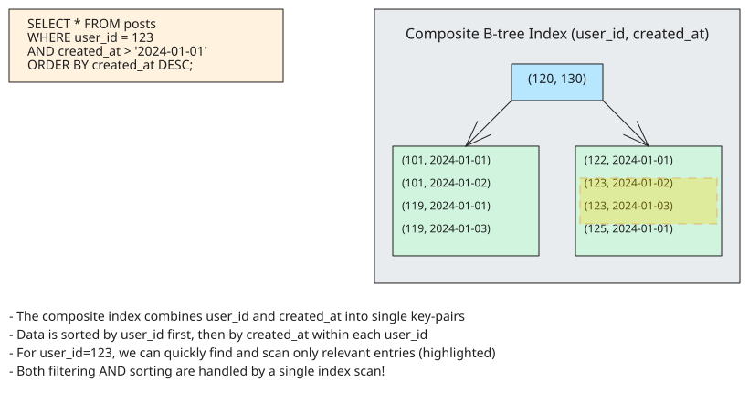
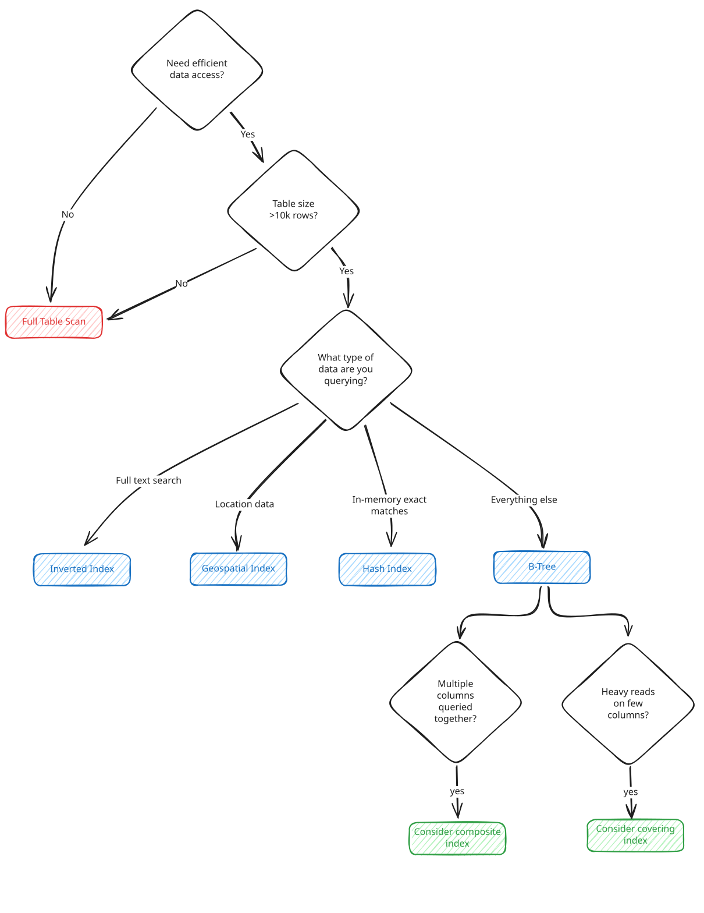

Core Concepts
Database Indexing
Learn about how database indexing works and how to optimize your queries
Database performance can make or break modern applications. Think about what it takes to search for a user's profile by email in a table with millions of records. Without any optimizations, the database would have to check each row sequentially, scanning through every single record until it finds a match. For a table with millions of rows, this becomes painfully slow - like searching through every book in a library one by one to find a specific novel.
This is where indexes come in handy. By maintaining separate data structures optimized for searching, indexes allow databases to quickly locate the exact records we need without examining every row. From finding products in an e-commerce catalog to loading user profiles in a social network, indexes are what make fast lookups possible.
Knowing when to add an index, to what columns, and what type of index is a critical part of system design. Choosing the right indexes is often a key focus in interviews. For mid-level engineers, understanding basic indexing strategies is expected. For staff-level engineers, mastery of different index types and their trade-offs is essential.
This deep dive covers how database indexes work under the hood and the different types you'll encounter. We'll start with the core concepts of how indexes are stored and accessed, then examine specific index types like B-trees, hash indexes, geospatial indexes, and more. For each type, we'll cover their strengths, limitations, and when to use them in your system design interviews.
First, let's understand exactly how databases store and use indexes to make our queries efficient.
Indexing and data organization tends to be a stronger focus in infrastructure style interviews. For full-stack and product-focused roles, you'll likely only need a basic understanding of when and why to use indexes. The depth we cover here goes beyond what's typically asked in full-stack interviews, but understanding the fundamentals will help you make better decisions when designing and optimizing your applications.
How Database Indexes Work
When we store data in a database, it's ultimately written to disk as a collection of files. The main table data is typically stored as a heap file - essentially a collection of rows in no particular order. Think of this like a notebook where you write entries as they come, one after another.
Physical Storage and Access Patterns
Unless interviewing for a database internals role, the details here are not going to be asked in an interview. That said, they are an important foundation to understand the problem of why we need indexes.
Modern databases face an interesting challenge: they need to store and quickly access vast amounts of data. While the data lives on disk (typically SSDs nowadays), we can only process it when it's in memory. This means every query requires loading data from disk into RAM.
When querying without an index, we need to scan through every page of data one by one, loading each into memory to check if it contains what we're looking for. With millions of pages, this means millions of (relatively)slow disk reads just to find a single record. It's like having to flip through every page of a massive book to find one specific word.
Modern databases have optimizations like prefetching and caching to make random access faster, but the point here still stands. It's too slow to scan through every page of data sequentially.
But with indexes, we transform our access patterns. Instead of reading through every page of data sequentially, indexes provide a structured path to follow directly to the data we need. They help us minimize the number of pages we need to read from storage by telling us exactly which pages contain our target data. It's the difference between checking every page in a book versus using the table of contents to jump straight to the relevant pages.
While SSDs are the norm today, it's important to note that random access is still significantly slower than sequential access, even on SSDs. This is a common misconception - while the performance gap is smaller than with HDDs, it's still very real. And for systems still using HDDs, especially for large datasets, this performance difference becomes even more pronounced, making proper indexing absolutely critical.
Cost
But indexes aren't free - they come with their own set of trade-offs. Every index we create requires additional disk space, sometimes nearly as much as the original data.
Write performance takes a hit too. When we insert a new row or update an existing one, the database must update not just the main table, but every index on it. With multiple indexes, a single write operation can trigger several disk writes.
So when might indexes actually hurt more than help? The classic case is a table with frequent writes but infrequent reads. Think of a logging table where we're constantly inserting new records but rarely querying old ones. Here, the overhead of maintaining indexes might not justify their benefit. Similarly, for small tables with just a few hundred rows, the cost of maintaining an index and traversing its structure might exceed the cost of a simple sequential scan.
In reality, the impact of indexes on memory is often overblown. Modern databases have smart buffer pool management that reduces the performance hit of having multiple indexes. However, it's still a good idea to closely monitor index usage and avoid creating unnecessary indexes that don't provide significant benefits.
Types of indexes
There are lots of indexes, many of which fall into the tail and are rarely used but for specialized use cases. Rather than enumerating every type of index you may see in the wild, we're going to focus in on the most common ones that show up in system design interviews.
B-Tree Indexes
B-tree indexes are the most common type of database index, providing an efficient way to organize data for fast searches and updates. They achieve this by maintaining a balanced tree structure that minimizes the number of disk reads needed to find any piece of data.
The Structure of B-trees
A B-tree is a self-balancing tree that maintains sorted data and allows for efficient insertions, deletions, and searches. Unlike binary trees where each node has at most two children, B-tree nodes can have multiple children - typically hundreds in practice. Each node contains an ordered array of keys and pointers, structured to minimize disk reads.

b-tree
Every node in a B-tree follows strict rules:
- All leaf nodes must be at the same depth
- Each node can contain between m/2 and m keys (where m is the order of the tree)
- A node with k keys must have exactly k+1 children
- Keys within a node are kept in sorted order
This structure is particularly clever because it maps perfectly to how databases store data on disk. Each node is sized to fit in a single disk page (typically 8KB), maximizing our I/O efficiency. When PostgreSQL needs to find a record with id=350, it might only need to read 2-3 pages from disk: the root node, maybe an internal node, and finally a leaf node.
Real-World Examples
B-trees are everywhere in modern databases. PostgreSQL uses them for almost everything - primary keys, unique constraints, and most regular indexes are all B-trees.
When you create a table like this in PostgreSQL:
CREATE TABLE users (
id SERIAL PRIMARY KEY,
email VARCHAR(255) UNIQUE
);PostgreSQL automatically creates two B-tree indexes: one for the primary key and one for the unique email constraint. These B-trees maintain sorted order, which is crucial for both uniqueness checks and range queries.
DynamoDB organizes items within a partition in sort-key order, enabling efficient range queries within that partition. Its storage internals aren’t publicly documented in detail, but it’s widely understood to use an LSM-style storage architecture rather than a B-tree for its underlying engine.
Even MongoDB, with its document model, uses B-trees (specifically B+ trees, a variant where all data is stored in leaf nodes) for its indexes.
When you create an index in MongoDB like this:
db.users.createIndex({ "email": 1 });You're creating a B-tree that maps email values to document locations.
Why B-trees are the default choice
B-trees have become the default choice for most database indexes because they excel at everything databases need:
- They maintain sorted order, making range queries and ORDER BY operations efficient
- They're self-balancing, ensuring predictable performance even as data grows
- They minimize disk I/O by matching their structure to how databases store data
- They handle both equality searches (email = 'x') and range searches (age > 25) equally well
- They remain balanced even with random inserts and deletes, avoiding the performance cliffs you might see with simpler tree structures
If you find yourself in an interview and you need to decide which index to use, B-trees are a safe bet.
LSM Trees (Log-Structured Merge Trees)
B-trees are great for balanced workloads, but what happens when you need to handle tons of writes? Think about building a system like DataDog that's ingesting millions of metrics per second from thousands of servers. Every CPU reading, memory stat, and error count needs to be stored immediately.
With B-trees, each write means finding the right leaf page, reading it into memory, updating it, and writing it back to disk. For a few thousand writes per second, this works fine. But when you're processing 100,000 writes per second, those random disk seeks become a bottleneck. It's like trying to update a filing cabinet where you need to find and modify individual folders scattered throughout - eventually, you spend more time searching than actually storing data.
This is where LSM trees work really well. But they take a fundamentally different approach to indexing. With B-trees, each index is its own separate structure that you can create on any column. LSM trees don't work this way. The LSM tree is the storage format for your entire table, sorted by the primary key. Your primary key lookups are extremely fast, but secondary indexes require additional structures - some systems like Cassandra and DynamoDB (via GSIs/LSIs) support them, though with different performance characteristics than primary key access.
Instead of updating data in place like B-trees, LSM trees use an append-only approach that's built for write-heavy workloads.
How LSM Trees Work
LSM trees solve the write problem by batching writes in memory and flushing them to disk sequentially. Instead of immediately writing each update to disk like B-trees do, LSM trees buffer changes in memory and write them out in large chunks. This converts many small random writes into fewer large sequential writes, increasing efficiency.
Here's what happens when you write to a database that uses LSM trees:
- Memtable (Memory Component): New writes go into an in-memory structure called a memtable, typically implemented as a sorted data structure like a red-black tree or skip list. This is extremely fast since it's all in RAM.
- Write-Ahead Log (WAL): To ensure durability, every write is also appended to a write-ahead log on disk. This is a sequential append operation, which is much faster than random writes.
- Flush to SSTable: Once the memtable reaches a certain size (often a few megabytes), it's frozen and flushed to disk as an immutable Sorted String Table (SSTable). This is a single sequential write operation that can write megabytes of data at once.
- Compaction: Over time, you accumulate many SSTables on disk. A background process called compaction periodically merges these files, removing duplicates and deleted entries. This keeps the number of files manageable and maintains read performance.

lsm-tree
This makes writes incredibly fast, you're just appending to memory and a log file. Even when flushing to disk, you're writing large sequential chunks rather than seeking to random locations.
Negative Impact on Reads
As always, this benefits comes at a cost. While LSM trees excel at writes, they make reads more complex. Remember how B-trees could find any record with just 2-3 disk reads? With LSM trees, the story is different.
When you query for a specific key, the database must check multiple places:
- First, the memtable: Is the data in the current in-memory buffer?
- Then, immutable memtables: Any memtables waiting to be flushed?
- Finally, all SSTables on disk: Starting from the newest (most likely to have recent data) and working backwards
This means a single point query might need to check dozens of files in the worst case. It's like searching for a document that could be in your desk drawer, filing cabinet, or any of several archive boxes. And you have to check them all.
Obviously, this would make LSM trees almost unusable for any workflow requiring reasonable read performance. So to mitigate this problem, LSM trees typically employ several optimizations:
- Bloom Filters: Each SSTable has an associated bloom filter - a probabilistic data structure that can quickly tell you if a key is definitely NOT in that file. This lets you skip most SSTables without reading them. If the bloom filter says "maybe", you still need to check, but it eliminates the definite misses.
- Sparse Indexes: Since SSTables are sorted, they maintain sparse indexes that tell you the range of keys in each block. If you're looking for user_id=500 and an SSTable only contains keys 1000-2000, you can skip it entirely.
- Compaction Strategies: Different compaction strategies optimize for different workloads. Size-tiered compaction minimizes write amplification but can lead to more files to check. Leveled compaction maintains fewer files but requires more frequent rewrites.
Despite these optimizations, LSM trees fundamentally trade read performance for write performance. This makes them perfect for write-heavy workloads like time-series databases, logging systems, and analytics platforms where you're constantly ingesting new data but queries are less frequent or can tolerate slightly higher latency.
The key insight for system design interviews is knowing when this trade-off makes sense. If you're building a system that writes far more than it reads - like a metrics collection system, audit log, or IoT data platform - LSM trees are likely the right choice. But for a user-facing application where every page load triggers multiple queries, B-trees usually perform better.
Real-World Examples
LSM trees power some of the most write-heavy systems on the internet:
Cassandra handles Netflix's billions of viewing events. When you watch a show, that data gets written to Cassandra's LSM-based storage without slowing down playback.
RocksDB (built by Facebook) serves as the storage engine for many databases. It handles millions of social interactions per second—likes, posts, messages—all written to LSM trees for fast persistence.
DynamoDB is generally understood to use an LSM-tree–style storage architecture optimized for high write throughput; its exact internals aren’t exposed publicly, and it does not dynamically switch storage engines based on access patterns.
Hash Indexes
While B-trees dominate the indexing landscape, hash indexes serve a specialized purpose: they excel at exact-match queries. They're simply a persistent hashmap implementation, trading flexibility for super-fast O(1) lookups.
How Hash Indexes Work
At their core, hash indexes are just a hashmap that maps indexed values to row locations. The database maintains an array of buckets, where each bucket can store multiple key-location pairs. When indexing a value, the database hashes it to determine which bucket should store the pointer to the row data.

hash-index
For example, with a hash index on email:
buckets[hash("alice@example.com")] -> [ptr to page 1]
buckets[hash("bob@example.com")] -> [ptr to page 2]Hash collisions are handled by allowing multiple entries per bucket, many systems use chaining with overflow storage when a bucket fills. For example, PostgreSQL hash indexes use buckets that can link to overflow pages (chaining). With a good hash function and load factor, average lookups remain O(1).
This structure makes hash indexes incredibly fast for exact-match queries - just compute the hash, go to the bucket, and follow the pointer. However, this same structure makes them useless for range queries or sorting since similar values are deliberately scattered across different buckets.
Real-World Usage
Despite their speed for exact matches, hash indexes are relatively rare in practice. PostgreSQL supports them but doesn't use them by default because B-trees perform nearly as well for exact matches while supporting range queries and sorting. As the PostgreSQL documentation notes, "B-trees can handle equality comparisons almost as efficiently as hash indexes."
However, hash indexes do shine in specific scenarios, particularly for in-memory databases. Redis, for example, uses hash tables as its primary data structure for key-value lookups because all data lives in memory. MySQL's MEMORY storage engine defaulted to hash indexes because in-memory exact-match queries were its primary use case. When working with disk-based storage, B-trees are usually the better choice due to their efficient handling of disk I/O patterns.
When to Choose Hash Indexes
For system design interviews, you might consider hash indexes when:
- You need the absolute fastest possible exact-match lookups
- You'll never need range queries or sorting
- You have plenty of memory (hash indexes tend to be larger than B-trees)
But in most cases, B-trees will be the better choice. They're nearly as fast for exact matches and give you the flexibility to handle range queries when you need them. In the words of database expert Bruce Momjian: "Hash indexes solve a problem we rarely have."
Don't overemphasize hash indexes in an interview. While it's good to know about them, focusing too much on them might make you seem out of touch with real-world database practices. Remember, hash indexes are rarely used in production systems. They're a bit like that specialized kitchen gadget you buy and then use only once. B-trees are just so versatile that they cover most use cases where you might consider a hash index.
Geospatial Indexes
Here's an interesting quirk of system design interviews: while geospatial indexes are fairly specialized in practice - you might never touch them unless you're working with location data - they've become a common focus in interviews. Why? The rise of location-based services like Uber, Yelp, and Find My Friends has made proximity search a favorite interview topic.
The Challenge with Location Data
Say we're building a restaurant discovery app like Yelp. We have millions of restaurants in our database, each with a latitude and longitude. A user opens the app and wants to find "restaurants within 5 miles of me." Seems simple enough, right?
The naive approach would be to use standard B-tree indexes on latitude and longitude:
CREATE TABLE restaurants (
id SERIAL PRIMARY KEY,
name VARCHAR(255),
latitude DECIMAL(10, 8),
longitude DECIMAL(11, 8)
);
CREATE INDEX idx_lat ON restaurants(latitude);
CREATE INDEX idx_lng ON restaurants(longitude);But this falls apart quickly when we try to execute a proximity search. Think about how a B-tree index on latitude and longitude actually works. We're essentially trying to solve a 2D spatial problem (finding points within a circle) using two separate 1D indexes.
When we query "restaurants within 5 miles," we'll inevitably hit one of two performance problems:
If we use the latitude index first, we'll find all restaurants in the right latitude range - but that's a long strip spanning the entire globe at that latitude! Then for each of those restaurants, we need to check if they're also in the right longitude range. Our index on longitude isn't helping because we're not doing a range scan - we're doing point lookups for each restaurant we found in the latitude range.
If we try to be clever and use both indexes together (via an index intersection), the database still has to merge two large sets of results - all restaurants in the right latitude range and all restaurants in the right longitude range. This creates a rectangular search area much larger than our actual circular search radius, and we still need to filter out results that are too far away.

latlong
This is why we need indexes that understand 2D spatial relationships. Rather than treating latitude and longitude as independent dimensions, spatial indexes let us organize points based on their actual proximity in 2D space.
Core Approaches
There are three main approaches you'll encounter in interviews: geohashes, quadtrees, and R-trees. Each has its own strengths and trade-offs, but all solve our fundamental problem: they preserve spatial relationships in our index structure.
We'll explore each one, but remember - while this seems like a lot of specialized knowledge, interviewers mainly want to see that you understand the basic problem (why regular indexes fall short) and can reason about at least one solution. You don't need deep expertise in all three approaches unless you're interviewing for a role that specifically works with location data.
Geohash
We'll start with geohash because it's the simplest spatial index to understand and the core idea is beautifully simple: convert a 2D location into a 1D string in a way that preserves proximity.

Geohash
Imagine dividing the world into four squares and labeling them 0-3. Then divide each of those squares into four smaller squares, and so on. Each division adds more precision to our location description. A geohash is essentially this process, but using a base32 encoding that creates strings like "dr5ru" for locations. The longer the string, the more precise the location:
- "9q8y" might represent all of San Francisco
- "9q8yy" narrows it down to the Mission District
- "9q8yyk" might pinpoint a specific city block
What makes geohash clever is that locations that are close to each other usually share similar prefix strings. Two restaurants on the same block might have geohashes that start with "9q8yyk", while a restaurant in a different neighborhood might start with "9q8yym".
And here's the real elegance: once we've converted our 2D locations into these ordered strings, we can use a regular B-tree index to handle our spatial queries. Remember how B-trees excel at prefix matching and range queries? That's exactly what we need for proximity searches.
When we index the geohash strings with a B-tree:
CREATE INDEX idx_geohash ON restaurants(geohash);Finding nearby locations becomes a matter of searching strings with matching prefixes. If we're looking for restaurants near geohash "9q8yyk", we can do a range scan in our B-tree for entries starting with that prefix. For radius queries, we also need to include adjacent geohash cells since our search area might span cell boundaries - but this is still just a handful of prefix range scans. This lets us leverage all the optimizations that databases already have for B-trees - no special spatial data structure needed.
This is why Redis's geospatial commands use this approach internally. When you run:
GEOADD restaurants -122.4194 37.7749 "Restaurant A"
GEOSEARCH restaurants FROMLONLAT -122.4194 37.7749 BYRADIUS 5 miGEORADIUS is deprecated in favor of GEOSEARCH. Redis uses geohash under the hood to efficiently find nearby points.
The main limitation of geohash is that locations near each other in reality might not share similar prefixes if they happen to fall on different sides of a major grid division - like two restaurants on opposite sides of a street that marks a geohash boundary. But for most applications, this edge case isn't significant enough to matter.
This elegance - turning a complex 2D problem into simple string prefix matching that can leverage existing B-tree implementations - is why geohash is such a popular choice. It's easy to understand, implement, and use with existing database systems that already know how to handle strings efficiently.
Quadtree
While less common in production databases today, quadtrees represent a fundamental tree-based approach to indexing 2D space that has shaped how we think about spatial indexing. Unlike geohash which transforms coordinates into strings, quadtrees directly partition space by recursively subdividing regions into four quadrants.
Start with one square covering your entire area. When a square contains more than some threshold of points (typically 4-8), split it into four equal quadrants. Continue this recursive subdivision until reaching a maximum depth or achieving the desired point density per node. This spatial partitioning maps to a tree structure:

Quadtree
For proximity searches, navigate down the tree to find the target quadrant, check neighboring quadrants at the same level, and adjust the search radius by moving up or down tree levels as needed.
The key advantage of quadtrees is their adaptive resolution - dense areas get subdivided more finely while sparse regions maintain larger quadrants. However, unlike geohash which leverages existing B-tree implementations, quadtrees require specialized tree structures. This implementation complexity explains why most modern databases prefer geohash or R-tree variants.
So while they're not common in production nowadays, quadtrees have a significant impact on modern spatial indexing. The core concept of recursive spatial subdivision forms the foundation for R-trees, which optimize these ideas for disk-based storage and better handling of overlapping regions. You'll even find quadtree principles in modern mapping systems - Google Maps uses a similar structure for organizing map tiles at different zoom levels.
Now let's see how R-trees evolved these concepts into today's production standard for spatial indexing.
R-Tree
R-trees have emerged as the default spatial index in modern databases like PostgreSQL/PostGIS and MySQL. While both quadtrees and R-trees organize spatial data hierarchically, R-trees take a fundamentally different approach to how they divide space.
Instead of splitting space into fixed quadrants, R-trees work with flexible, overlapping rectangles. Where a quadtree rigidly divides each region into four equal parts regardless of data distribution, R-trees adapt their rectangles to the actual data. Think of organizing photos on a table - a quadtree approach would divide the table into equal quarters and keep subdividing, while an R-tree would let you create natural, overlapping groupings of nearby photos.

R-tree
When searching for nearby restaurants in San Francisco, an R-tree might first identify the large rectangle containing the city, then drill down through progressively smaller, overlapping rectangles until reaching individual restaurant locations. These rectangles aren't constrained to fixed sizes or positions - they adapt to wherever your data actually clusters. A quadtree, in contrast, would force you to navigate through a rigid grid of increasingly smaller squares, potentially requiring more steps to reach the same destinations.
This flexibility offers a crucial advantage: R-trees can efficiently handle both points and larger shapes in the same index structure. A single R-tree can index everything from individual restaurant locations to delivery zone polygons and road networks. The rectangles simply adjust their size to bound whatever shapes they contain. Quadtrees struggle with this mixed data - they keep subdividing until they can isolate each shape, leading to deeper trees and more complex traversal.
The trade-off for this flexibility is that overlapping rectangles sometimes force us to search multiple branches of the tree. Modern R-tree implementations use smart algorithms to balance this overlap against tree depth, tuning for how databases actually read data from disk. This balance of flexibility and disk efficiency is why R-trees have become the standard choice for production spatial indexes.
If you're asked about geospatial indexing in an interview, focus on explaining the problem clearly and contrasting a tree-based approach with a hash-based approach.
For example, you could say something like:
"Traditional indexes like B-trees don't work well for spatial data because they treat latitude and longitude as independent dimensions. To efficiently search for nearby locations, we need an index that understands spatial relationships. Geohash is a hash-based approach that converts 2D coordinates into a 1D string, preserving proximity. This allows us to use a regular B-tree index on the geohash strings for efficient proximity searches. However, tree-based approaches like R-trees can offer more flexibility and accuracy by grouping nearby objects into overlapping rectangles, creating a hierarchy of bounding boxes."
By contrasting these two approaches, you demonstrate a deeper understanding of the trade-offs involved in geospatial indexing.
Inverted Indexes
While B-trees excel at finding exact matches and ranges, they fall short when we need to search through text content. Consider what happens when you run a query like:
SELECT * FROM posts WHERE content LIKE '%database%';Here, we're looking for posts that contain the word "database" anywhere in their content - not just posts that start or end with it. Even with a B-tree index on the content column, the database can't use the index at all. Why? B-tree indexes can only help with prefix matches (like 'database%') or suffix matches (if you index the reversed content). When the pattern could match anywhere within the text, the database has no choice but to check every character of every post, reading entire text fields into memory to look for matches.
This full pattern matching gets exponentially slower as your text content grows. Each additional character in your posts means more data to scan, more memory to use, and more CPU cycles spent checking patterns. It's like trying to find every mention of a word in a library by reading every book, page by page.
An inverted index solves this by flipping the relationship between documents and their content. Instead of storing documents with their words, it stores words with their documents. Think of it like the index at the back of a textbook - rather than reading every page to find mentions of "ACID properties", you can look up "ACID" and find every page that discusses it.
Here's how it works. Consider a simple blogging platform with these posts:
doc1: "B-trees are fast and reliable"
doc2: "Hash tables are fast but limited"
doc3: "B-trees handle range queries well"The inverted index creates a mapping:
b-trees -> [doc1, doc3]
fast -> [doc1, doc2]
reliable -> [doc1]
hash -> [doc2]
tables -> [doc2]
limited -> [doc2]
handle -> [doc3]
range -> [doc3]
queries -> [doc3]While this basic mapping shows the core concept, production inverted indexes are much more sophisticated. When systems like Elasticsearch index text, they first run it through an analysis pipeline that processes and enriches the content. This means:
- Breaking text into tokens (words or subwords)
- Converting to lowercase
- Removing common "stop words" like "the" or "and"
- Often applying stemming (reducing words to their root form)
So when a user searches for "Databases", the system can match documents containing "database", "DATABASE", or even "database's". This is why full-text search feels so natural compared to rigid pattern matching.
Modern search systems like Elasticsearch and Lucene build additional features on top of this foundation:
- Term frequency analysis (how often words appear)
- Relevance scoring (which documents best match the query)
- Fuzzy matching (finding close matches like "databas")
- Phrase queries (matching exact sequences of words)
In practice, you'll see inverted indexes whenever advanced text search is needed. When developers search GitHub repositories, when users search Slack message history, or when you search through documentation - they're all using inverted indexes under the hood.
There are still trade-offs, of course.Inverted indexes require substantial storage overhead and careful updating. When a document changes, you need to update entries for every term it contains. But for making text truly searchable, these are trade-offs we're willing to make.
You can learn more about how inverted indexes work in our Elasticsearch Deep Dive.
Index Optimization Patterns
So far, we've explored the main types of indexes you'll encounter in system design interviews: B-trees for general-purpose querying, hash indexes for exact matches, geospatial indexes for location data, and inverted indexes for text search. Each type solves a specific class of problem, with trade-offs in storage, performance, and flexibility.
Experienced engineers spend significant time analyzing their application's read and write patterns, looking for ways to reduce the processing overhead of common queries. They identify performance bottlenecks by examining query plans and database metrics, then strategically improve performance using appropriate indexing strategies. This often requires looking beyond just picking the right type of index - it's about understanding your access patterns and crafting an indexing approach that efficiently supports them.
Composite Indexes
Composite indexes are the most common optimization pattern you'll encounter in practice. Instead of creating separate indexes for each column, we create a single index that combines multiple columns in a specific order. This matches how we typically query data in real applications.
Consider a typical social media feed query:
SELECT * FROM posts
WHERE user_id = 123
AND created_at > '2024-01-01'
ORDER BY created_at DESC;We could create two separate indexes:
CREATE INDEX idx_user ON posts(user_id);
CREATE INDEX idx_time ON posts(created_at);But this isn't optimal. The database would need to:
- Use one index to find all posts by user 123
- Use another index to find all posts after January 1st
- Intersect these results
- Sort the final result set by created_at
Instead, a composite index gives us everything we need in one shot:
CREATE INDEX idx_user_time ON posts(user_id, created_at);When we create a composite index, we're really creating a B-tree where each node's key is a concatenation of our indexed columns. For our (user_id, created_at) index, each key in the B-tree is effectively a tuple of both values. The B-tree maintains these keys in sorted order based on user_id first, then created_at. Conceptually, the keys might look like:
(1, 2024-01-01)
(1, 2024-01-02)
(1, 2024-01-03)
(2, 2024-01-01)
(2, 2024-01-02)
(3, 2024-01-01)Now when we execute our query, the database can traverse the B-tree to find the first entry for user_id=123, then scan sequentially through the index entries for that user until it finds entries beyond our date range. Because the entries are already sorted by created_at within each user_id group, we get both our filtering and sorting for free.
This structure is particularly efficient because we're using the B-tree's natural ordering to handle multiple conditions in a single index traversal. We've effectively turned our two-dimensional query (user and time) into a one-dimensional scan through ordered index entries.

composite-index
The Order Matters
The order of columns in a composite index is crucial. Our index on (user_id, created_at) is great for queries that filter on user_id first, but it's not helpful for queries that only filter on created_at. This follows from how B-trees work - we can only use the index efficiently for prefixes of our column list.
This is why you'll often hear database experts say "order columns from most selective to least selective." But there's more nuance in practice. Sometimes query patterns trump selectivity - if you frequently sort by a particular column, including it in your composite index (even if it's not highly selective) can eliminate expensive sort operations.
Consider common interview scenarios like:
- Order history lookups: (customer_id, order_date)
- Event processing: (status, priority, created_at)
- Activity feeds: (user_id, type, timestamp)
Covering Indexes
A covering index is one that includes all the columns needed by your query - not just the columns you're filtering or sorting on. Think about showing a social media feed with post timestamps and like counts. With a regular index on (user_id, created_at), the database first finds matching posts in the index, then has to fetch each post's full data page just to get the like count. That's a lot of extra disk reads just to display a number.
By including the likes column directly in our index, we can skip those expensive page lookups entirely. The database can return everything we need straight from the index itself:
CREATE TABLE posts (
id SERIAL PRIMARY KEY,
user_id INT,
title TEXT,
content TEXT,
likes INT,
created_at TIMESTAMP
);
-- Regular index
CREATE INDEX idx_user_time ON posts(user_id, created_at);
-- Covering index includes likes column
CREATE INDEX idx_user_time_likes ON posts(user_id, created_at) INCLUDE (likes);I'm using SQL as the examples given it's the most ubiquitous language for database interactions. But the same principles apply to other database systems and even NoSQL solutions.
With the covering index, PostgreSQL can return results purely from the index data - no need to look up each post in the main table. This is especially powerful for queries that only need a small subset of columns from large tables.
The trade-off is, of course, size - covering indexes are larger because they store extra columns. But for frequently-run queries that only need a few columns, the performance boost from avoiding table lookups often justifies the storage cost. This is particularly true in social feeds, leaderboards, and other read-heavy features where query speed is critical.
The reality in 2026 is that covering indexes are more of a niche optimization than a go-to solution. Modern database query optimizers have become quite smart at executing queries efficiently with regular indexes. While covering indexes can provide significant performance gains in specific scenarios - like read-heavy tables with limited columns - they come with real costs in terms of maintenance overhead and storage space.
In an interview, you may be wise to focus on simpler indexing strategies and, if reaching for covering indexes, be sure to make sure you have a good reason for why it's necessary.
If you're not sure if they make sense in a given scenario, it's often better to err on the side of simplicity.
Wrapping Up

Flowchart
Indexes matter. Not just in interviews, but in production systems. Knowing how to use them effectively is a key skill for any developer and is knowledge that is regularly tested in interviews.
Most important is knowing when you need an index, and on what columns. This should be a natural instinct when you're designing a new schema. Consider the query patterns you're likely to run, and whether you'll be filtering or sorting on certain columns.
From here, expect that you may be asked what type of index you would use for a given scenario. When in doubt, go with B-trees. They're the swiss army knife of indexes, handling both exact matches and range queries efficiently, and they're what most databases use by default for good reason.
The two main exceptions are when you're dealing with spatial data, or full-text search.
If you're dealing with latitude and longitude, and need to efficiently search for nearby points, you'll want to opt for a geospatial index. If you only want to know one option, learn geohashing. Better still if you can explain how it works and weigh the tradeoffs between it and tree-based approaches.
Lastly, when it comes to full-text search, you'll need an inverted index to search large amounts of text efficiently. While it's unlikely you'll get deeply probed about how they work, you should have a basic understanding of the reverse mapping from keywords to documents.
With these tools in your toolbelt, you'll be well prepared for the overwhelming majority of indexing questions that may come your way.
Test Your Knowledge
Answer the question below to find your gaps.
Question 1 of 15
What is the main trade-off when adding indexes to a database table?
1
Slower reads but faster writes
2
Faster reads but slower writes
3
Higher CPU usage but lower memory
4
Better compression but worse security